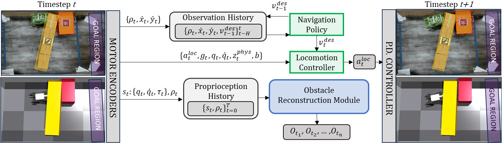

In critical applications, including search-and-rescue in degraded environments, blockages can be prevalent and prevent the effective deployment of certain sensing modalities, particularly vision, due to occlusion and the constrained range of view of onboard camera sensors. To enable robots to tackle these challenges, we propose a new approach, Proprioceptive Obstacle Detection and Estimation while navigating in clutter (PROBE), which instead relies only on the robot's proprioception to infer the presence or absence of occluded rectangular obstacles while predicting their dimensions and poses in SE(2). The proposed approach is a Transformer neural network that receives as input a history of applied torques and sensed whole-body movements of the robot and returns a parameterized representation of the obstacles in the environment. The effectiveness of PROBE is evaluated on simulated environments in Isaac Gym and with a real Unitree Go1 quadruped robot.

We evaluated PROBE in 45 trials on a real Unitree Go1: 20 Easy, 20 Medium and 5 Hard. Mean IoU between the estimated and true obstacles at the end of each contact window ranged from 0.20 to 0.45 across obstacle types, against 0.33 to 0.50 over 1,000 simulated trials per category (Tables I and II in the paper).
For all the demonstrations below the ground truth obstacles are colored in yellow for movable and red for static. The predicted obstacles are colored in orange for movable and blue for static. The robot pose is shown in green.
@inproceedings{ramesh2025probe,
title = {PROBE: Proprioceptive Obstacle Detection and Estimation while Navigating in Clutter},
author = {Ramesh, Dhruv Metha and Sivaramakrishnan, Aravind and Keskar, Shreesh and Bekris, Kostas E. and Yu, Jingjin and Boularias, Abdeslam},
booktitle = {2025 IEEE International Conference on Robotics and Automation (ICRA)},
pages = {698--704},
year = {2025},
doi = {10.1109/ICRA55743.2025.11128475}
}